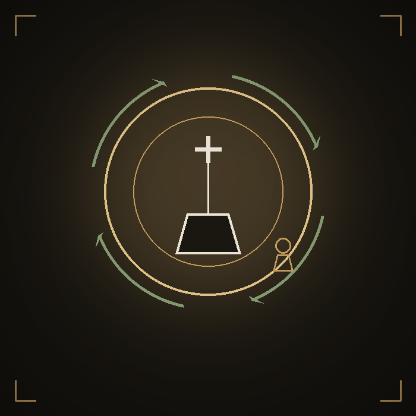
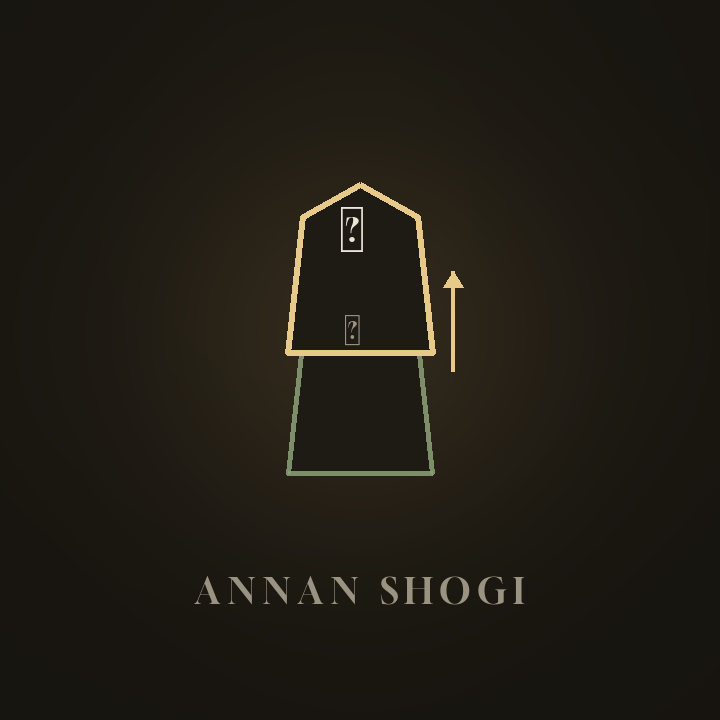
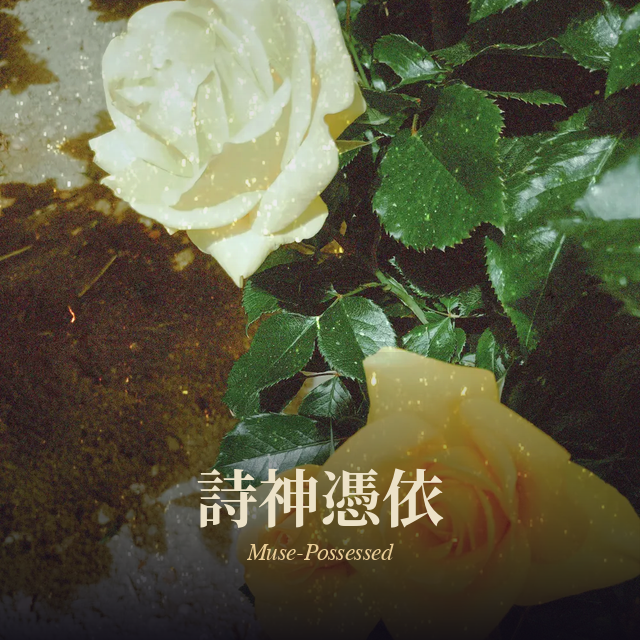
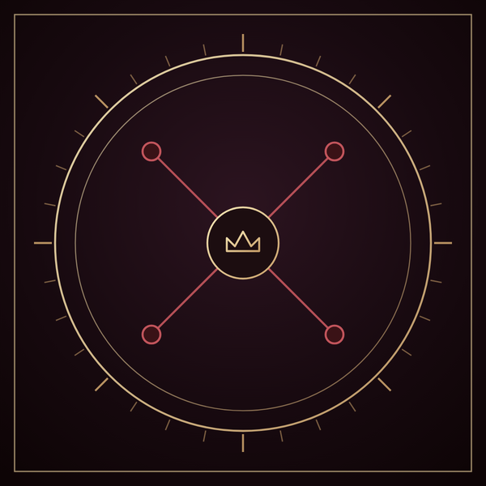

2026-07
輪廻転生チェス
Reincarnation Chess
駒を取ると、輪廻の輪へ投げ返される。より強く、あるいはより弱く、敵味方どちらの
駒としてか分からないまま盤上に生まれ変わる――そのまま輪廻を抜け出すこともある。
キングだけは決して転生しない。カルマ・縁・解脱、3つの掟を選んで対局できる。
日英表示切替つき。
Every captured piece is cast back onto the Wheel — it may return stronger,
weaker, or on either side of the board, or escape the cycle for good. Only
the King never reincarnates. Choose from three optional Laws of Rebirth —
Karma, Bond, and Enlightenment — before each match. Switchable JA/EN interface.
ブラウザで遊ぶ
Play in Browser

2026-07
安南将棋
Annan Shogi
駒が、後ろの駒の動きを借りる。読みを裏切られ続ける、伝統的な変則将棋。
AI対戦（強さ5段階）と、このアプリだけの「潮汐ルール」を搭載。日英表示切替つき。
A piece borrows the move of whatever's standing behind it — a traditional
shogi variant that keeps turning your reading upside down. Comes with an AI
opponent (5 difficulty levels) and an original Tide Rule. Switchable JA/EN interface.
ブラウザで遊ぶ
Play in Browser

2026-07
詩神憑依
Muse-Possessed
古典・現代ギリシア語、100語の単語カードから選ぶと、詩神が憑依して
ホメロス風の叙事詩を紡ぐ。古典ギリシア語・日本語・英語の三言語で
詩が表示される、ことば遊びのゲーム。
Choose from 100 word cards spanning Classical and Modern Greek, and
the Muse takes hold, weaving a Homeric epic verse. The poem appears
in Classical Greek, Japanese, and English — a small game about words.
ブラウザで遊ぶ
Play in Browser

2026-07
チャトランガ
Chaturanga
サイコロで動かせる駒が決まる、四人対抗の元祖将棋。対角の同盟と、
玉座を奪っての領地拡大が勝敗を分ける。二人制の古典ルールも収録、
日英表示切替つき。
A dice-driven ancestor of chess for four rival armies. Diagonal
alliances and throne annexation decide the battle — the classic
two-player ruleset is included too, with a switchable EN/JA interface.
ブラウザで遊ぶ
Play in Browser

2026-07
シュレーディンガーズチェス
Schrödinger's Chess
駒はすべて「？」から始まる、量子力学モチーフの変則チェス。配置はランダム、
正体は動かすまでわからない。デコヒーレンス、トンネル効果、量子もつれが
盤面を絶えず揺さぶる。
A quantum-mechanics-flavored chess variant where every piece starts as a "?".
Setup is random and identities stay hidden until you move them. Decoherence,
tunneling, and entanglement keep shaking up the board.
ブラウザで遊ぶ
Play in Browser

開発中
In Development
DODECIM(十二紋章戦)
DODECIM (Twelve-Sigil War)
レーン制のカードバトル。4つの紋章カテゴリと十二面ダイスが趨勢を決める、
均整のとれたファンタジー対戦ゲーム。
A lane-based card battler. Four sigil categories and a twelve-sided die
decide the tide of battle, in a balanced fantasy duel.
詳細を見る
View Details

公開中
Released
Blood Sigil(五つの魂)
Blood Sigil: Five Spirits
勝てば刻印、負ければ能力が覚醒する。5体の非対称なAIと対峙する、
ダークファンタジーのカード対戦。日英両対応。
Win, and you're marked with a Blood Sigil. Lose, and a dormant power
awakens. A dark fantasy card duel against five asymmetric AI opponents.
Japanese and English supported.
詳細を見る
View Details

2026-07
村のあさごはん
Village Breakfast
食料庫が空っぽの朝、うさぎとねこが食べ物を探しに村を出る、
ゆるくて温かい探索アドベンチャー。にわとりとの「あっちむいてホイ」、
くまとの「ハイアンドロー」勝負など、ちょっとしたミニゲームも。
A gentle exploration adventure — Rabbit and Cat search for breakfast
after the village storehouse turns up empty. Along the way: a game of
"Guess the Direction" with the chicken, and a High-Low card duel with the bear.
ブラウザで遊ぶ
Play in Browser